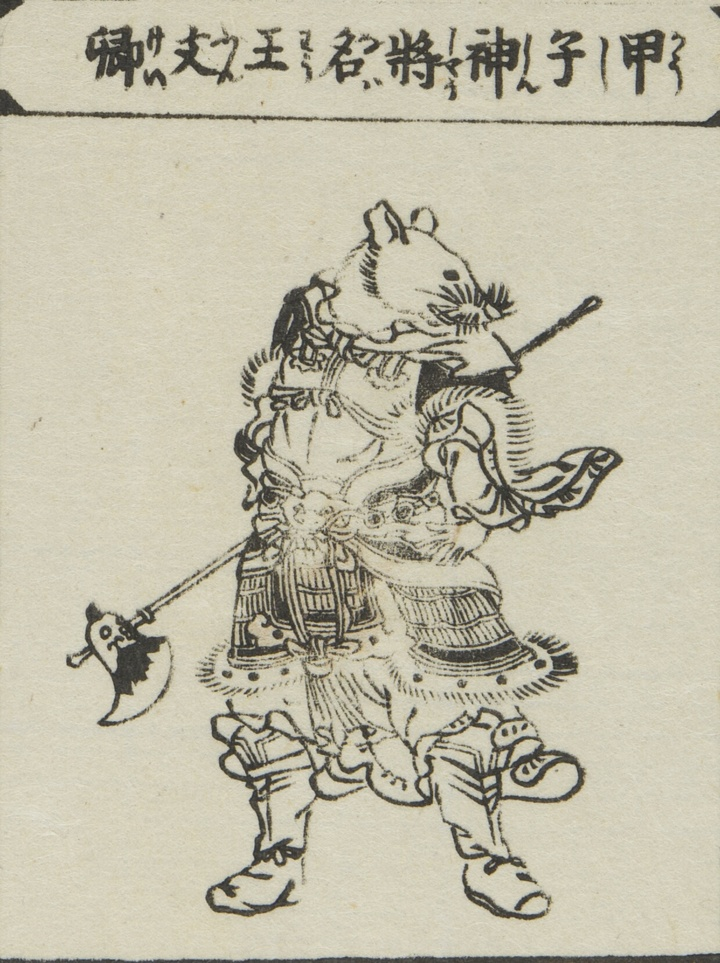

獣面人身の姿で描かれた神将。顔は子であり、甲冑を身に着け、手に武器を持つ。
著作者：平住専庵・橘有税画／出典：親書誌：U426_nichibunken_0476：唐土訓蒙圖彙；モロコシキンモウズイ／日付：2025／資源識別子：U426_nichibunken_0476_0002_0003
Copyright (c)2010- International Research Center for Japanese Studies, Kyoto, Japan. All rights reserved.